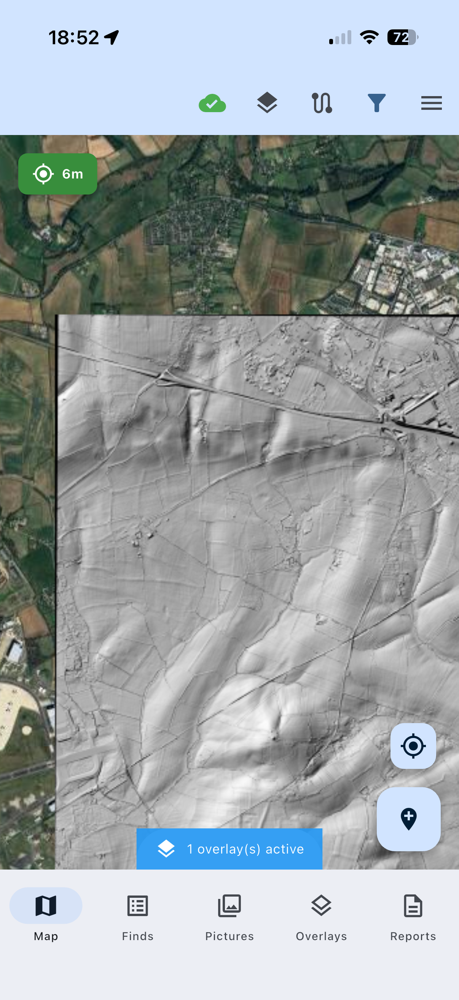
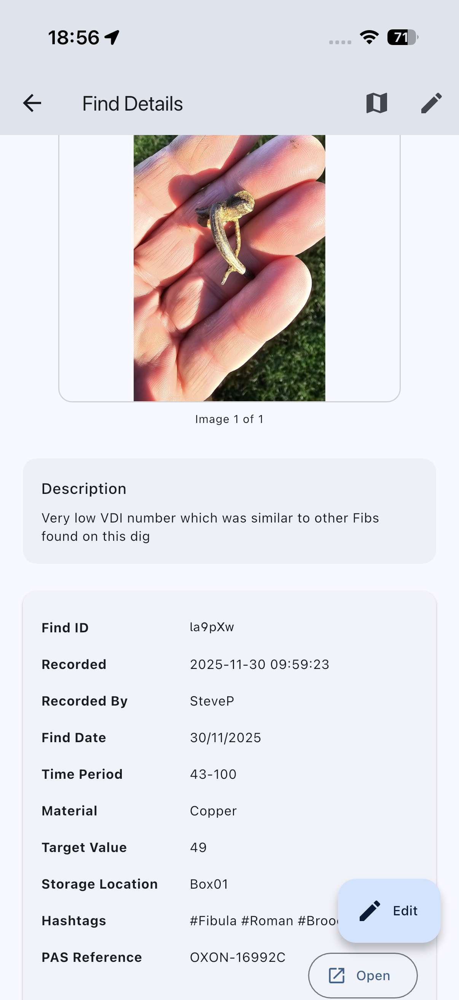
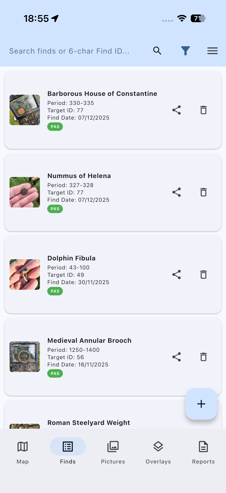

DetectLogPro in Action

Historic Maps & Lidar
Overlay Lidar data to discover hidden landscapes and plan your detecting trips

Detailed Find Recording
Capture every detail with photos, location, depth, and custom metadata

Powerful Find Management
Search, filter, and organize your entire collection with ease
Introducing ScalePlate
Turn your photos of a find into a single, properly scaled plate, ready for recording, reporting or sharing. Available for iPhone, iPad and Mac.

Calibrate against a known distance

Cut the find out

Export the finished plate
Scaled Plates
Front, Back and Side views side by side with a scale bar, title and date
Calibrate & Crop
Calibrate each photo against a known distance, then crop and cut the find out from its background
Microscope & Watch Folder
Capture from a UVC microscope or watch a folder so new images appear automatically
Innovation Meets Adventure
At PageTech, we're passionate about creating cutting-edge technology that enhances the metal detecting experience. Our mission is to empower detectorists with powerful tools that make every search more productive and enjoyable.
Precision Technology
Advanced algorithms designed specifically for metal detecting enthusiasts
Mobile First
Built for the field, accessible anywhere you detect
User Focused
Designed by detectorists, for detectorists